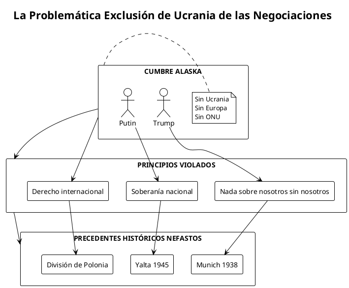
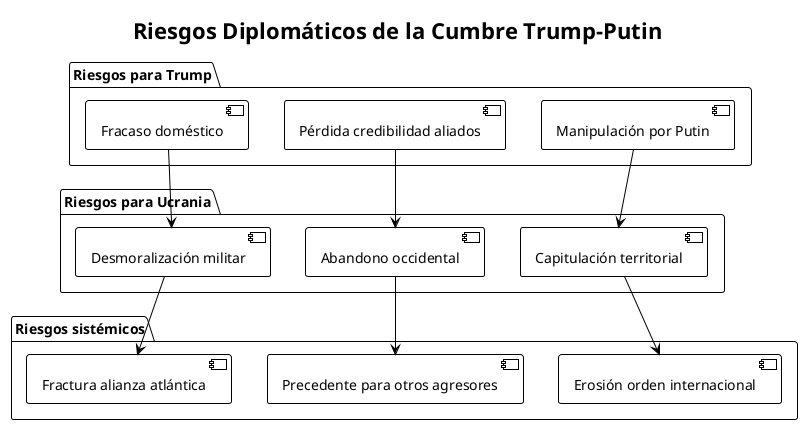
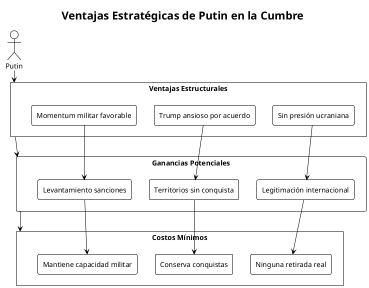
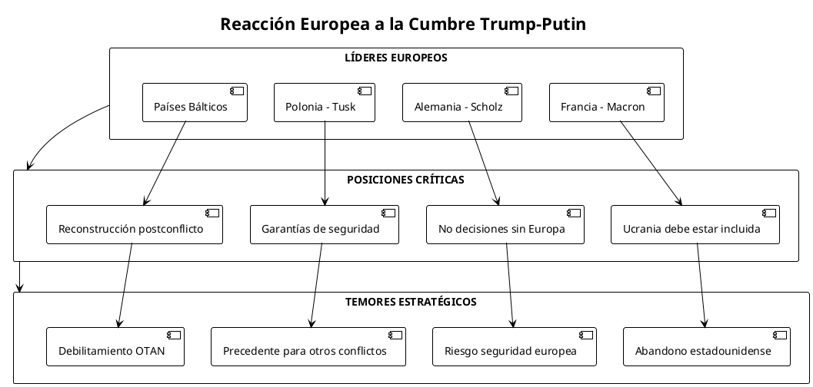
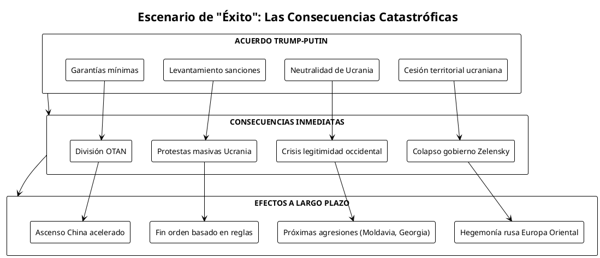
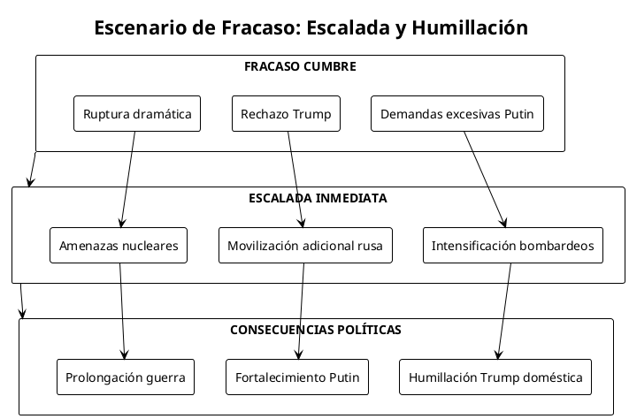
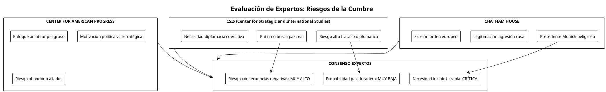
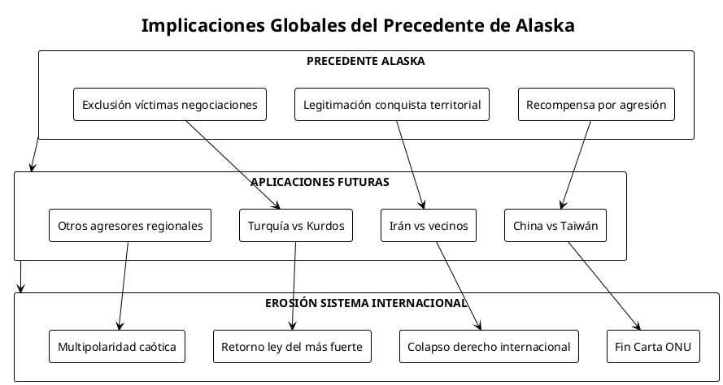
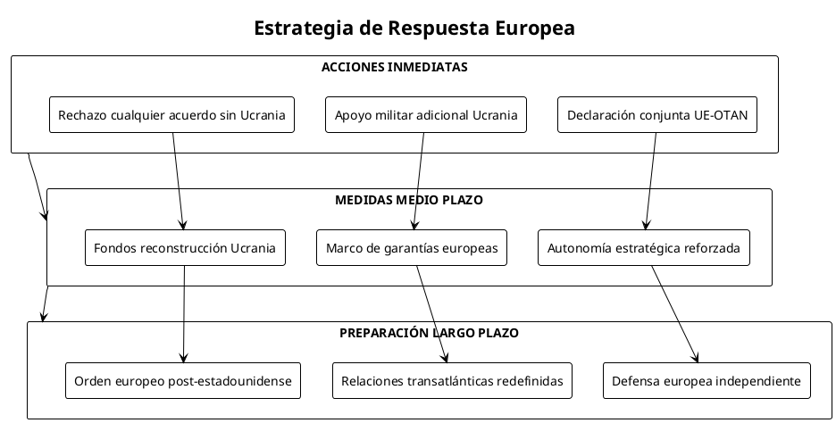

Los Riesgos de la Cumbre Trump-Putin: Un Análisis Crítico de las Negociaciones de Paz sin Ucrania
Los Riesgos de la Cumbre Trump-Putin: Un Análisis Crítico de las Negociaciones de Paz sin Ucrania
Análisis exhaustivo de los peligros inherentes a la cumbre bilateral Trump-Putin en Alaska y sus implicaciones para Ucrania, Europa y el orden internacional
El Precedente Peligroso de Alaska
El presidente Donald Trump ha enmarcado su cumbre del viernes con Vladimir Putin como un momento para tantear los parámetros del líder ruso para terminar la guerra en Ucrania, programada para el 15 de agosto de 2025 en Alaska. Sin embargo, un ex embajador estadounidense y diplomático de carrera dice que la historia indica que las posibilidades de una paz duradera que salga de la cumbre Trump-Putin son bastante bajas.
Esta cumbre bilateral, que excluye deliberadamente a Ucrania de las negociaciones sobre su propio territorio, representa uno de los experimentos diplomáticos más arriesgados del segundo mandato de Trump. Trump dijo que era poco probable que el presidente ucraniano Volodymyr Zelensky fuera incluido en las conversaciones que describió como una "reunión de tanteo" para entender mejor las demandas de Rusia.
Contexto histórico y simbólico
La ubicación importa, dijo el ex magnate inmobiliario presidente estadounidense Donald Trump. Momentos después anunció que Alaska, un lugar vendido por Rusia a Estados Unidos hace 158 años por $7.2 millones, sería donde el presidente ruso Vladimir Putin trata de vender su negocio territorial del siglo, consiguiendo que Kiev entregue trozos de tierra que aún no ha podido ocupar.
I. Anatomía de un Enfoque Diplomático Defectuoso
A. La Exclusión de Ucrania: Violación de Principios Fundamentales

Trump se reunirá con Putin en Alaska para conversaciones sobre Ucrania la próxima semana. Pero Zelensky ya ha objetado ser dejado fuera de las negociaciones. Esta exclusión representa múltiples violaciones de principios diplomáticos establecidos:
1. Principio de "Nada sobre nosotros sin nosotros"
La exclusión de Ucrania de negociaciones sobre su propio territorio y futuro viola el principio fundamental de autodeterminación nacional.
2. Precedentes históricos peligrosos
La cumbre evoca los acuerdos de Munich (1938) y Yalta (1945), donde las grandes potencias decidieron sobre naciones más pequeñas sin su consentimiento.
3. Legitimación del agresor
Al sentarse como igual con Putin sin Ucrania presente, Trump implícitamente legitima las reivindicaciones territoriales rusas.
B. Análisis de los Riesgos Diplomáticos Inmediatos

| Tipo de Riesgo | Probabilidad | Impacto | Consecuencias a largo plazo |
|---|---|---|---|
| Manipulación de Putin | Alta | Severo | Legitimación de la agresión |
| Fracaso negociación | Muy alta | Moderado | Escalada del conflicto |
| Abandono de Ucrania | Media | Catastrófico | Colapso del orden europeo |
| División OTAN | Alta | Severo | Debilitamiento defensa colectiva |
II. La Estrategia de Putin: Máximos Beneficios, Mínimas Concesiones
A. Ventajas tácticas rusas en Alaska

Analistas que monitorean inteligencia de fuentes abiertas dicen que unidades avanzadas rusas parecen haber atravesado cerca de la ciudad ucraniana de Pokrovsk. Esta situación militar favorable otorga a Putin ventajas significativas:
1. Timing militar favorable
Putin llega a Alaska con momentum militar, habiendo avanzado significativamente en el frente oriental.
2. Ausencia de contrapeso ucraniano
Sin Zelensky presente, Putin no enfrenta rechazo directo a sus demandas territoriales.
3. Presidente estadounidense ansioso
Trump ha prometido públicamente resolver el conflicto rápidamente, creando presión para aceptar términos desfavorables.
B. El "Intercambio de Territorios": Eufemismo para la Capitulación
El presidente Donald Trump dijo el viernes que se reunirá "muy pronto" con el presidente ruso Vladimir Putin y anticipó términos de un acuerdo de paz potencial para terminar la guerra en Ucrania que podría incluir "algún intercambio de territorios".
Esta formulación representa un eufemismo peligroso que:
- Normaliza la agresión: Presenta la conquista territorial como "intercambio" legítimo
- Ignora el derecho internacional: Viola la prohibición de adquisición territorial por fuerza
- Recompensa la violencia: Otorga a Putin ganancias por la guerra de agresión
III. Reacciones Europeas: Alarma y Resistencia
A. La Respuesta de los Aliados Europeos

Los líderes europeos emitieron una crítica apenas velada a Trump por excluir a Ucrania de las conversaciones de paz con Putin. Algunos líderes europeos dicen que Ucrania debe ser incluida en cualquier conversación con Rusia sobre terminar la guerra.
B. Fracturas en la Alianza Atlántica
La cumbre de Alaska amenaza con crear fisuras profundas en la OTAN y la alianza transatlántica:
| País/Región | Posición | Preocupación Principal | Respuesta Probable |
|---|---|---|---|
| Francia | Oposición firme | Abandono de principios europeos | Autonomía estratégica reforzada |
| Alemania | Crítica diplomática | Estabilidad europea | Mediación con Washington |
| Polonia | Alarma máxima | Seguridad directa amenazada | Fortalecimiento defensa nacional |
| Países Bálticos | Pánico estratégico | Próximos en línea rusa | Llamada Artículo 5 OTAN |
| Reino Unido | Apoyo cauteloso | Relación especial con EEUU | Equilibrio difícil |
IV. Análisis de Escenarios: Del Fracaso a la Catástrofe
A. Escenario 1: El "Éxito" de Trump - La Peor Opción

Un "acuerdo exitoso" en Alaska podría ser la peor opción posible, estableciendo precedentes catastróficos:
Consecuencias para Ucrania
- Pérdida del 20-25% del territorio nacional
- Colapso del gobierno democrático de Zelensky
- Imposición de neutralidad forzada
- Desmilitarización parcial
Efectos sistémicos globales
- Fin del principio de integridad territorial
- Legitimación de la conquista por fuerza
- Señal verde para agresores futuros (China sobre Taiwán)
- Colapso del orden internacional de posguerra
B. Escenario 2: Fracaso de las Negociaciones

El fracaso de las negociaciones también conlleva riesgos significativos:
Riesgos de escalada
- Putin podría intensificar ataques para demostrar fuerza
- Amenazas nucleares como herramienta de presión
- Extensión del conflicto a otros frentes
Consecuencias políticas
- Trump enfrentaría humillación doméstica tras promesas grandiosas
- Putin consolidaría imagen de líder inquebrantable
- Mayor polarización en Estados Unidos y Europa
V. Perspectivas de los Expertos: Un Consenso de Pesimismo
A. Análisis de Veteranos Diplomáticos
Un ex embajador estadounidense y diplomático de carrera dice que la historia indica que las posibilidades de una paz duradera que salga de la cumbre Trump-Putin son bastante bajas. Los expertos identifican múltiples deficiencias en el enfoque:
1. Proceso diplomático defectuoso
- Ausencia de preparación técnica adecuada
- Falta de coordinación con aliados
- Motivación política más que estratégica
2. Asimetría de incentivos
Persuadir a Putin a hacer realmente la paz en Ucrania será más difícil—y requerirá que Trump domine el arte de la diplomacia coercitiva.
3. Timing inadecuado
- Putin en posición militar ventajosa
- Trump bajo presión por promesas de campaña
- Ucrania debilitada pero no derrotada
B. Evaluación de Riesgos por Think Tanks

Mientras Trump y Putin se preparan para reunirse en Alaska en medio de la guerra de Ucrania, surgen preguntas sobre posibles acuerdos, la ausencia de Ucrania y el futuro de la paz. Los expertos de CSIS analizan las apuestas políticas, militares y diplomáticas que dan forma a esta cumbre crítica.
VI. Implicaciones para el Orden Internacional
A. El Precedente de Alaska: Más Allá de Ucrania

Las consecuencias de Alaska trascienden Europa Oriental:
1. Señal para China
Beijing observará cuidadosamente si Occidente acepta conquistas territoriales por fuerza, aplicando lecciones a Taiwán.
2. Efecto dominó regional
Otros actores revisionistas (Irán, Turquía, etc.) pueden interpretar el precedente como luz verde para sus propias ambiciones.
3. Fin del orden basado en reglas
La aceptación de cambios fronterizos por fuerza marca el fin del sistema internacional de posguerra.
B. Alternativas Ignoradas: Lo que Debería Hacerse
| Enfoque Alternativo | Descripción | Ventajas | Desafíos |
|---|---|---|---|
| Conferencia Multilateral | Incluir Ucrania, UE, ONU | Legitimidad internacional | Complejidad logística |
| Proceso Gradual | Etapas con verificación | Construcción de confianza | Tiempo prolongado |
| Marco de Garantías | Seguridad internacional para Ucrania | Disuasión futura agresión | Compromiso militar OTAN |
| Reconstrucción Paralela | Plan Marshall para Ucrania | Incentivo para paz | Costo económico masivo |
VII. Análisis de Costos-Beneficios: Una Ecuación Desbalanceada
Tabla de análisis costo-beneficio integral
| Stakeholder | Beneficios Potenciales | Costos Probables | Balance Neto |
|---|---|---|---|
| Trump | Gloria doméstica corto plazo | Humillación si fracasa / Pérdida credibilidad aliados | ⚖️ Negativo |
| Putin | Legitimación internacional / Ganancias territoriales | Concesiones mínimas requeridas | ⚖️ Muy Positivo |
| Ucrania | Alto al fuego temporal | Pérdida territorial permanente / Abandono occidental | ⚖️ Muy Negativo |
| Europa | Estabilidad regional aparente | Precedente peligroso / Seguridad comprometida | ⚖️ Negativo |
| China | Precedente para Taiwán | Mayor atención occidental | ⚖️ Positivo |
| Orden Internacional | Ninguno identificable | Erosión principios fundamentales | ⚖️ Catastrófico |
VIII. Recomendaciones Estratégicas: Cómo Mitigar los Daños
A. Para la Administración Trump
Si la cumbre es inevitable, medidas de mitigación de daños:
- Incluir a Ucrania inmediatamente: Ningún acuerdo sin consentimiento ucraniano
- Coordinar con aliados europeos: Consultas previas obligatorias
- Establecer líneas rojas claras: No cesiones territoriales permanentes
- Preparar marco de garantías: Seguridad internacional para Ucrania post-conflicto
B. Para los Aliados Europeos

C. Para Ucrania: Preparación para Todos los Escenarios
Ucrania debe prepararse para múltiples resultados:
Escenario de "acuerdo"
- Rechazo categórico de cesiones territoriales permanentes
- Movilización resistencia civil y militar
- Apelación directa a pueblos europeos y estadounidense
Escenario de fracaso de cumbre
- Preparación para intensificación del conflicto
- Diversificación de fuentes de apoyo internacional
- Fortalecimiento de capacidades de defensa autónomas
Conclusión: Alaska como Momento Definitorio
La cumbre Trump-Putin en Alaska representa un momento definitorio no solo para Ucrania, sino para el orden internacional del siglo XXI. La cumbre del próximo viernes en Alaska es una de las mayores apuestas del segundo mandato de Trump, elevando las expectativas de un fin a la guerra. Tanto él como Putin tienen poder de negociación.
Sin embargo, el análisis exhaustivo revela que los riesgos superan vastamente cualquier beneficio potencial. La exclusión de Ucrania viola principios fundamentales de soberanía y autodeterminación, mientras que la estructura bilateral favorece claramente a Putin, quien llega a la mesa con momentum militar y mínimos incentivos para hacer concesiones reales.
El verdadero peligro no radica en el fracaso de las negociaciones, sino en su "éxito". Un acuerdo que recompense la agresión rusa con ganancias territoriales establecería un precedente catastrófico que resonaría desde Taiwán hasta el Ártico, marcando el fin efectivo del orden internacional basado en reglas.
Para Europa, Alaska representa una llamada de atención sobre la necesidad urgente de autonomía estratégica. La disposición de Washington a negociar sobre territorio europeo sin consulta europea subraya la obsolescencia de las estructuras de seguridad atlánticas tradicionales.
La historia juzgará Alaska no por las intenciones declaradas de sus organizadores, sino por sus consecuencias duraderas. Si Trump y Putin logran imponer un acuerdo que legitime la conquista territorial por fuerza, habrán desmantelado 80 años de progreso en derecho internacional y habrán abierto la puerta a una era de caos multipolar donde el poder determina el derecho.
La comunidad internacional aún tiene tiempo para prevenir esta catástrofe diplomática, pero requiere voluntad política para anteponer principios a conveniencia, y coraje para decir "no" cuando los costos de decir "sí" son demasiado altos para la humanidad.
Referencias Documentales
Fuentes primarias y declaraciones oficiales
- CNN Politics. (2025, 11 agosto). "Trump says he'll be feeling out Putin as US officials rush to finalize details of Alaska summit". https://www.cnn.com/2025/08/11/politics/trump-putin-summit-alaska-details